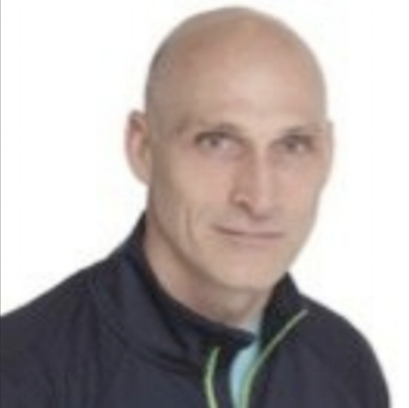

OUR TEAM
AT VIT WE BELIEVE EVERYONE DESERVES THE RIGHT TO
A SAFE AND COLLABORATIVE WORK ENVIRONMENT.

Bill Besselman
Bill is current the Executive VP of Thread International and was the former VP of Connected Fitness and Strategy and Integration for Under Armour. He is a serial angel investor and passionate about consumer products companies and enterprise wearables companies.
Chris Hughes, PT, Ph.D, OCS, CSCS
Chris has over 20 years of experience in Sports Medicine, Injury Prevention, and Biomechanics. He has published in various peer reviewed publications. Chris currently serves as editor of the APTA orthopaedic section’s Independent study course series and also as editor of Orthopaedic PT practice.
Michael Parkinson, MD, MPH,FACPM
Mike is the Principal at P3 Health (Prevention, Performance, Productivity). He is the former president of the American College of Preventive Medicine and a retired Air Force colonel who was Associate Director, Medical Programs and Resources in the Office of the Surgeon General.